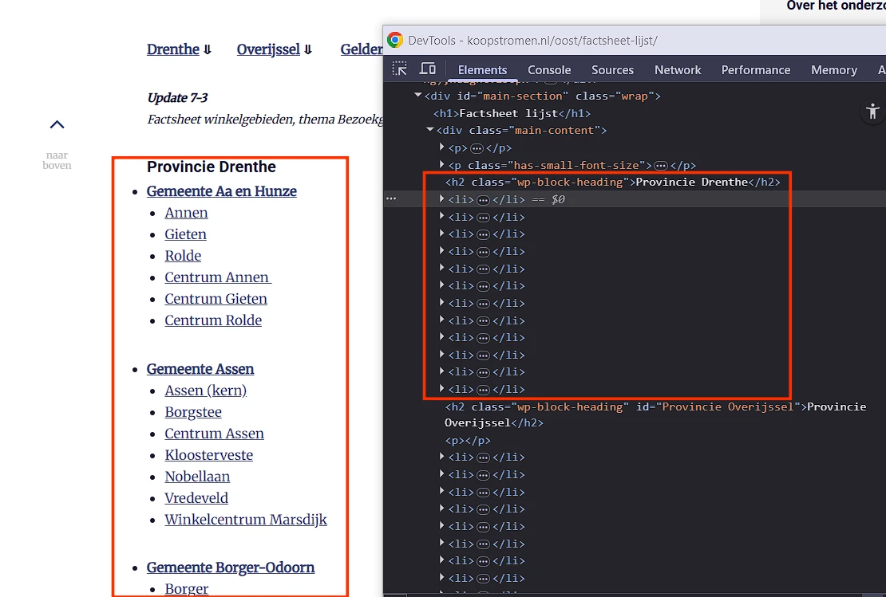
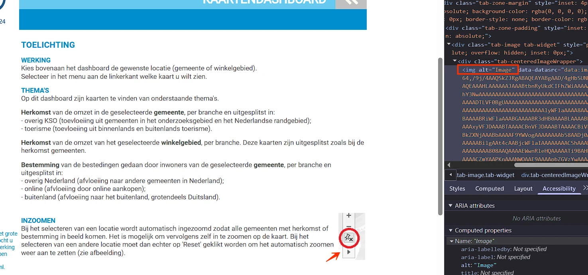
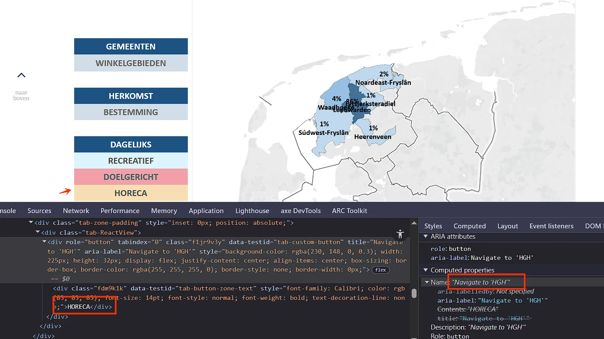
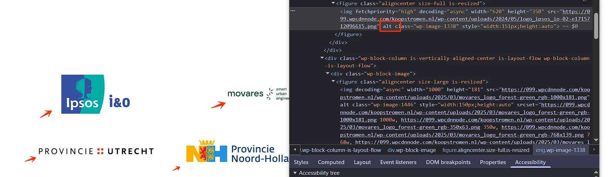
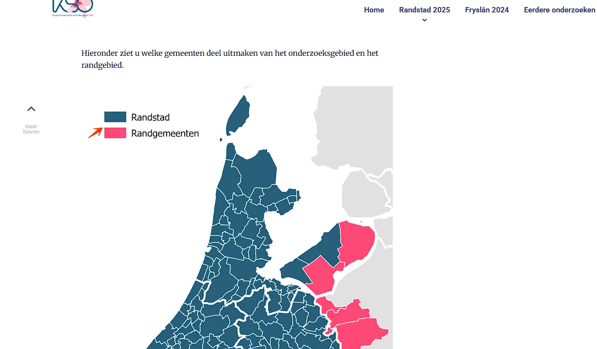
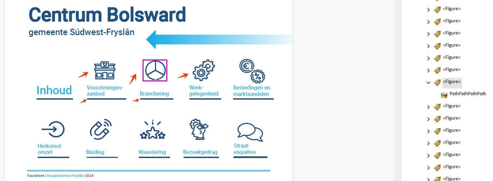
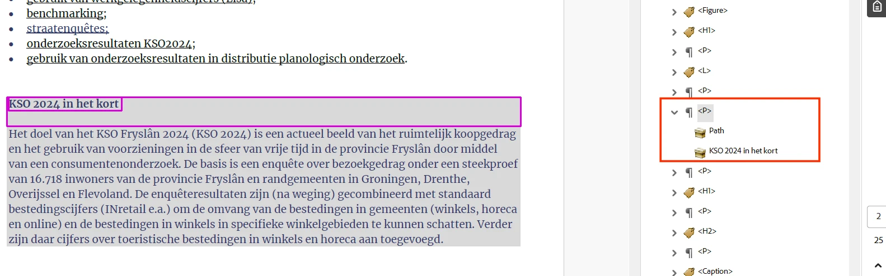
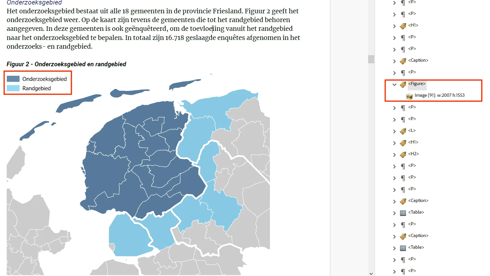

Audit digitale toegankelijkheid van website koopstromen.nl
Samenvatting
Wij hebben de website koopstromen.nl onderzocht tussen 18 en 25 november 2025. Op dit moment zijn 32 van de 55 succescriteria als voldoende beoordeeld. In dit rapport lees je wat er bij de overige nog fout gaat, en hoe je dat kunt verbeteren.
Deze website mist een skiplink.
Er moet een manier zijn om delen van een pagina over te slaan, zoals het navigatiemenu en andere elementen die op meerdere pagina’s terugkomen. Je gebruikt hier een skiplink voor. Daarmee kun je vaste blokken met herhalende inhoud overslaan. Een skiplink moet de eerste link op de pagina zijn. Deze link mag verborgen zijn, maar moet zichtbaar worden zodra hij focus krijgt.
Oplossing:
Voeg een skiplink toe waarmee bezoekers herhalende delen van de pagina over kunnen slaan.
Zorg dat de skiplink:
de eerste link op de pagina is;
visueel verborgen is, maar zichtbaar wordt bij toetsenbordfocus;
naar de hoofdcontent van de pagina springt als de bezoeker de link activeert.
#3 - Elementen die toetsenbordfocus krijgen, zijn bedekt door sticky footer / header
Impact: GrootType: TechniekWCAG: 2.4.11
Op alle pagina’s, wanneer de website wordt verkleind naar een lagere resolutie, bedekt een sticky header een deel van de pagina-inhoud. Terwijl interactieve elementen nog steeds toetsenbordfocus krijgen, is de focusindicator verborgen achter de sticky header.
Hierdoor kunnen bezoekers die met het toetsenbord navigeren niet zien waar de toetsenbordfocus zich bevindt.
Oplossing:
Zorg ervoor dat de sticky header of footer geen interactieve elementen of hun focusindicatoren bedekt. Je moet hiervoor bijvoorbeeld de z-index aanpassen, elementen herpositioneren of de header/footer dynamisch verkleinen op kleinere schermen.
#4 - Menuknop heeft niet de juiste rol
Impact: GrootType: TechniekWCAG: 4.1.2EN: 9.4.1.2
Op alle pagina’s ontbreekt op een klein scherm de menuknop bovenaan de juiste toegankelijke rol, naam en status (open/dicht).
De juiste rol voor de menuknop zou button (knop) moeten zijn, omdat je er een actie mee uitvoert: het openen of sluiten van het menu. Als de knop niet de juiste rol heeft, kan een schermlezer of ander hulpmiddel de knop niet goed herkennen. Daardoor wordt de knop moeilijker te gebruiken voor mensen die deze hulptechnologie nodig hebben.
Oplossing:
Zorg dat de menuknop de juiste rol krijgt door het button-element te gebruiken of door role="button" toe te voegen.
Voorzie deze knop van een toegankelijke naam, bijvoorbeeld door een beschrijvende knoptekst te gebruiken, een aria-label, of andere geschikte technieken.
Je kunt de status van de knop aangeven met aria-expanded of met visueel verborgen tekst.
#5 - Menuknop is niet met het toetsenbord te bedienen
Impact: GrootType: TechniekWCAG: 2.1.1EN: 9.2.1.1
Op alle pagina’s verschijnt op een klein scherm de menuknop bovenaan. Deze menuknop is niet met het toetsenbord te bedienen.
Alle interactieve elementen moeten met het toetsenbord kunnen worden bediend.
Oplossing:
Zorg dat de knop zowel met de spatiebalk als de Enter-toets kan worden bediend.
#6 - Kleurcontrast van tekst is te laag (tekst kleiner dan 19px)
Op alle pagina’s staan op een klein scherm in het mobiele menu witte links op een lichtgrijze achtergrond (#BFBFBF), bijvoorbeeld “Randstad 2025”. De kleur contrastratio is te laag: 1,8:1.
Hetzelfde probleem komt voor in het mobiele menu bij de witte link “Home” op een grijze achtergrond (#A6A6A6). De kleurcontrastratio is te laag: 2,4:1.
Oplossing:
Deze tekst is kleiner dan 19px. Daarom moet het contrast met de achtergrondkleur minimaal 4,5:1 zijn. Op deze pagina staat een instructie die uitlegt hoe je kleurcontrast kunt testen: https://properaccess.nl/hoe-test-ik-kleurcontrast/.
#7 - Mobiel menu werkt niet goed met toetsenbordfocus
Impact: GrootType: TechniekWCAG: 2.4.3EN: 9.2.4.3
Op alle pagina’s staat bovenaan de menuknop. Deze knop opent een mobiel menu. Op dit moment kunnen bezoekers met het toetsenbord uit het mobiele menu navigeren. De toetsenbordfocus verschuift dan naar de onderliggende pagina terwijl het menu open blijft staan.
Bij dit soort menu’s moet de toetsenbordfocus goed worden ingesteld. Wanneer het menu actief is, moet de focus binnen het menu blijven en mag deze niet op de onderliggende pagina terechtkomen. Dit kan worden opgelost door de focus binnen het menu te houden, totdat de bezoeker op de sluitknop heeft geklikt of op de ESC-toets heeft gedrukt. Het is ook mogelijk om het menu automatisch te sluiten zodra de toetsenbordfocus eruit gaat.
Oplossing:
Zorg ervoor dat de focus in het menu blijft totdat de bezoeker dit sluit door op de sluitknop te klikken of de ESC-toets in te drukken. Je kunt het menu ook automatisch sluiten wanneer de focus het menu verlaat.
#8 - Elementen die toetsenbordfocus krijgen, zijn bedekt door een mobiel menu
Impact: GrootType: TechniekWCAG: 2.4.11
Op alle pagina’s overlapt het mobiele menu op kleine schermen de interactieve elementen eronder. Deze verborgen elementen kunnen toch nog toetsenbordfocus krijgen.
Elementen die de focus krijgen, moeten altijd zichtbaar zijn. Anders kunnen bezoekers die met het toetsenbord of een schermlezer navigeren de weg kwijtraken.
Oplossing:
Je lost dit op een van de volgende manieren op:
Houd de focus binnen het menu: Zorg dat de toetsenbordfocus in het menuvenster blijft tot de bezoeker het menu sluit of op Esc drukt.
Sluit het chatvenster automatisch: Sluit het menuvenster automatisch zodra de toetsenbordfocus het venster verlaat.
Het is cruciaal dat onderliggende interactieve elementen geen toetsenbordfocus krijgen zolang het mobiele menu open is.
#9 - Kleurcontrast van tekst is niet voldoende bij toetsenbordfocus en/of als de muiscursor erover beweegt
Op alle pagina’s zijn er donkerblauwe links, bijvoorbeeld in het hoofdmenu “Randstad 2025”. Wanneer je erover hovert, worden deze links lichtblauw (#69ACDF) op een witte achtergrond. De contrastratio is 2,5:1.
Tekst van informatieve elementen, zoals links en knoppen, moet altijd voldoende contrast hebben. Dit geldt ook wanneer het element toetsenbordfocus krijgt of wanneer de bezoeker er met de muiscursor overheen beweegt (hover).
Oplossing:
Zorg dat de tekst, ook wanneer de muis eroverheen gaat, minimaal een contrast van 4,5:1 behoudt ten opzichte van de achtergrond. Op deze pagina staat een instructie die uitlegt hoe je kleurcontrast kunt testen: https://properaccess.nl/hoe-test-ik-kleurcontrast/.
Op deze pagina staat lichtblauwe tekst (#69ACDF) “Contact” op een lichtgrijze achtergrond (#E9E9E9). De kleurcontrastratio is te laag: 2:1.
Hetzelfde probleem komt voor bij witte tekst “Verzenden” op een lichtblauwe achtergrond (#69ACDF). De kleurcontrastratio is te laag: 2,5:1.
Hetzelfde probleem komt voor
op de pagina https://koopstromen.nl/randstad/ bij de link “Lees meer over het onderzoek”;
op https://koopstromen.nl/randstad/over-het-onderzoek/ bij de link “Over het onderzoek”;
op https://koopstromen.nl/randstad/koopstromen-in-1-minuut/ bij de link “Koopstromen in 1 minuut”, en op andere pagina’s.
Oplossing:
Deze tekst is kleiner dan 19px. Daarom moet het contrast met de achtergrondkleur minimaal 4,5:1 zijn. Op deze pagina staat een instructie die uitlegt hoe je kleurcontrast kunt testen: https://properaccess.nl/hoe-test-ik-kleurcontrast/.
#11 - Invoervelden voor persoonlijke gegevens hebben geen autocomplete-attribuut
Op deze pagina ontbreekt het autocomplete-attribuut bij een formulier met invoervelden voor persoonlijke gegevens (bijvoorbeeld voornaam, e-mailadres).
Invoervelden voor persoonlijke informatie zoals achternaam, e-mailadres of telefoonnummer moeten het autocomplete-attribuut hebben. Hierdoor kunnen browsers en hulpsoftware helpen bij het invoeren. Bijvoorbeeld door de velden al automatisch in te vullen.
Hetzelfde probleem komt voor op de pagina: https://koopstromen.nl/handboek-kooporientaties/.
Oplossing:
Gebruik het autocomplete-attribuut voor alle velden waar persoonlijke informatie moet worden ingevuld. Op deze pagina vind je meer informatie over autocomplete en welke waardes je verplicht moet gebruiken: https://www.w3.org/Translations/WCAG22-nl/#input-purposes
#12 - De kleur van de rand van het invoerveld heeft niet genoeg contrast
Op deze pagina staat onder de kop “Contact” een formulier. De contrastratio tussen de lichtgrijze (#F4F4F4) randen van de invoervelden en de witte achtergrond van de pagina is 1,1:1.
Hetzelfde probleem komt voor op de pagina: https://koopstromen.nl/handboek-kooporientaties/.
Oplossing:
De randen van interactieve elementen, zoals invoervelden, moeten minimaal een contrast van 3,0:1 hebben met de achtergrond.
#13 - Toetsenbordfocus is niet zichtbaar
Impact: GrootType: TechniekWCAG: 2.4.7EN: 9.2.4.7
Op deze pagina is de toetsenbordfocus niet zichtbaar op de link “Verzenden”.
De toetsenbordfocus moet altijd zichtbaar zijn op interactieve elementen zoals links, knoppen en invoervelden die met het toetsenbord focus kunnen krijgen. Bezoekers die met het toetsenbord navigeren moeten goed kunnen zien op welke plek van de pagina ze zijn. Anders weten ze niet op welk moment ze op Enter moeten drukken om een knop of link te bedienen.
Op deze pagina verschijnt bij het verzenden van een formulier met onjuiste gegevens de foutmelding: “Een of meer velden bevatten een fout; graag controleren en opnieuw proberen.” Deze melding heeft aria-hidden="true".
Het attribuut aria-hidden="true" zorgt ervoor dat inhoud wordt verborgen voor schermlezers. Gebruik dit daarom niet bij informatieve elementen.
Hetzelfde probleem komt voor op de pagina: https://koopstromen.nl/handboek-kooporientaties/.
Oplossing:
Verwijder het attribuut aria-hidden=”true”.
#15 - De foutmelding bevat geen informatie over waar de fout is opgetreden en geen suggesties om deze te herstellen
Op deze pagina staat een formulier. De foutmelding bevat geen informatie over waar de fout is opgetreden en geen aanwijzingen om de fout te herstellen. De melding is bijvoorbeeld simpelweg: “Een of meer velden bevatten een fout; graag controleren en opnieuw proberen”.
In plaats daarvan moet de foutmelding aangeven waar de fout precies is opgetreden en uitleggen wat er wordt verwacht, bijvoorbeeld: “Vul uw volledige naam in met alleen letters” of “Het veld ‘Je naam (verplicht)’ mag niet leeg zijn”.
Hetzelfde probleem komt voor op de pagina: https://koopstromen.nl/handboek-kooporientaties/.
Oplossing:
Geef informatie over waar de fout precies is opgetreden en hoe deze kan worden opgelost.
#16 - Bezoekers die inzoomen tot 200% of 400% kunnen niet meer alle tekst lezen.
Bij een resolutie van 1280 bij 1024 pixels en een zoomniveau van 200% of 400% zijn de tekst en links onder de koppen “Ipsos I&O Publiek – Enschede” en “Ipsos I&O Publiek – Amsterdam” vrijwel niet meer zichtbaar.
Oplossing:
Zorg dat alles nog werkt en leesbaar is als een bezoeker inzoomt tot 200% of 400% op een scherm van 1280 bij 1024 pixels.
#17 - Kleurcontrast van tekst is niet voldoende bij toetsenbordfocus en/of als de muiscursor erover beweegt
Op deze pagina staan in het zijmenu links, bijvoorbeeld “Home”. Wanneer je erover hovert, worden deze links lichtblauw (#69ACDF) op een lichtgrijze achtergrond (#F4F4F4). De contrastverhouding is 2,2:1.
Tekst van informatieve elementen, zoals links en knoppen, moet altijd voldoende contrast hebben. Dit geldt ook wanneer het element toetsenbordfocus krijgt of wanneer de bezoeker met de muiscursor over het element beweegt (hover).
Hetzelfde probleem komt voor
op https://koopstromen.nl/randstad/over-het-onderzoek/;
op https://koopstromen.nl/randstad/koopstromen-in-1-minuut/;
op https://koopstromen.nl/randstad/veelgestelde-vragen/ en op andere pagina’s.
Oplossing:
Zorg dat de tekst, ook wanneer de muis eroverheen gaat, minimaal een contrast van 4,5:1 behoudt ten opzichte van de achtergrond. Op deze pagina staat een instructie die uitlegt hoe je kleurcontrast kunt testen: https://properaccess.nl/hoe-test-ik-kleurcontrast/.
Op deze pagina staat lichtrode tekst (#DC5C51) op een witte achtergrond, bijvoorbeeld “Lees meer”. De kleurcontrastratio is te laag: 3,7:1.
Oplossing:
Deze tekst is kleiner dan 24px en niet vetgedrukt. Daarom moet het contrast minimaal 4,5:1 zijn. Op deze pagina staat een instructie die uitlegt hoe je kleurcontrast kunt testen: https://properaccess.nl/hoe-test-ik-kleurcontrast/.
#19 - Tekstalternatief van het logo is niet voldoende
Op deze pagina wordt bovenaan bij het logo met een link de volledige tekst “Ipsos i&O” getoond, maar de alt-tekst is “Logo I&O Research”.
Het tekstalternatief bevat nu niet alle tekst die in het logo staat, maar dat is wel noodzakelijk. Zo weten bezoekers die het logo niet kunnen zien precies wat er staat.
Dit probleem hangt ook samen met succescriterium 2.5.3. De zichtbare tekst komt niet voor in een toegankelijke naam en de link kan niet met stemcommando’s worden bediend.
Oplossing:
Verander de alt-tekst zodat de volledige tekst van het logo erin staat: “Ipsos i&O”.
strong-element is gebruikt voor opmaak
Impact: KleinType: ContentWCAG: 1.3.1EN: 9.1.3.1
Op deze pagina wordt het strong-element misbruikt voor puur visuele opmaak, bijvoorbeeld bij de link “Koopstromen in 1 minuut”.
Het strong-element heeft een semantische waarde: het geeft een bepaalde betekenis aan de tekst die erin staat. Dit element geeft aan dat de tekst extra nadruk moet krijgen. Om die reden kun je dit element beter niet gebruiken om alleen een visueel effect te bereiken (vetgedrukte tekst).
Hetzelfde probleem komt voor
op de pagina https://koopstromen.nl/fryslan/resultaten/, bijvoorbeeld bij “Ga naar de factsheets”;
op https://koopstromen.nl/fryslan/factsheets/, bijvoorbeeld bij “<< terug”;
op https://koopstromen.nl/oost/factsheet-lijst/, bijvoorbeeld bij “Drenthe”; en op andere pagina’s.
Oplossing:
Verwijder de onnodige strong-elementen en gebruik CSS om de tekst vet te maken. Je kunt tekst ook vet weergeven met het <b>-element.
#20 - Afbeelding zonder tekstalternatief is de enige inhoud van een link
Op deze pagina staat onder de kop “Koopstromen Randstad 2025” een afbeelding die als link fungeert, maar het tekstalternatief ontbreekt, waardoor de link niet toegankelijk is.
Verderop op de pagina komt hetzelfde probleem voor bij artikelen die afbeeldingslinks bevatten.
De afbeelding is dus interactief. Er is geen tekstalternatief. Daardoor heeft de link geen inhoud.
Dit probleem hangt ook samen met succescriterium 4.1.2. De links hebben geen toegankelijke naam en ook met succescriterium 2.4.4, omdat de links geen doel hebben.
Oplossing:
Om deze link toegankelijk te maken, moet de afbeelding een tekstalternatief krijgen dat het linkdoel beschrijft. Zo weten gebruikers van schermlezers waar de link naartoe leidt.
#21 - Linktekst is niet duidelijk genoeg
Impact: MediumType: ContentWCAG: 2.4.4EN: 9.2.4.4
Op deze pagina bevatten meerdere links de vage tekst “Lees meer”. Deze tekst beschrijft de bestemming van de link niet duidelijk genoeg en zorgt daardoor voor ambiguïteit. Dit is vooral lastig voor gebruikers met cognitieve beperkingen en voor bezoekers die afhankelijk zijn van een schermlezer.
Linkteksten die meerdere keren op een pagina voorkomen of nietszeggend zijn (zoals ‘lees meer’), geven de bezoeker geen duidelijke aanwijzingen over hun bestemming.
Oplossing:
Zorg dat het duidelijk is waar een link naartoe leidt, bijvoorbeeld door een tekst als ‘lees meer’ aan te vullen met de paginatitel. Als visueel duidelijk is bij welk onderdeel de link hoort, kan deze aanvullende tekst visueel worden verborgen. Bijvoorbeeld: ‘lees meer (over het project)’ of ‘lees meer (in onze blog)’.
Op deze pagina zijn de volgende teksten onjuist opgemaakt met strong in plaats van met correcte kop-elementen: “Update 7-3”, “Gemeente Aa en Hunze”.
Het strong-element is niet bedoeld om koppen mee te markeren. Je moet dat altijd doen met een kop-element, zoals h2. Koppen gebruik je om een tekst te structureren. Alleen als je ze als kop markeert met een kop-element, begrijpt hulpsoftware die betekenis. Het strong-element gebruik je wel als je nadruk wilt leggen op enkele woorden of een zinsdeel.
Oplossing:
Verwijder het strong-element en gebruik de juiste kop-elementen om deze koppen te markeren, zoals h2 of h3.
#22 - Opsomming is niet opgebouwd met het HTML-element ul of ol
Impact: MediumType: ContentWCAG: 1.3.1EN: 9.1.3.1

Op deze pagina staan lijsten, maar de lijst-items hebben geen ouder-element <ul> of <ol>. Onder de kop “Provincie Drenthe” staat bijvoorbeeld een lijst met 12 items zonder correcte opmaak.
Tekst die eruitziet als een opsomming, moet ook zo in de code worden gemarkeerd. Je gebruikt voor lijsten en opsommingen de HTML-elementen ol (lijst met cijfers) of ul (lijst met bullets). Meestal is hiervoor een knop in de content-editor van een CMS. Hulpsoftware weet dan hoe de tekst is gestructureerd. Bovendien kondigen schermlezers het aantal items in de lijst aan, voordat ze die gaan voorlezen. Een bezoeker die blind is, weet dan hoeveel informatie er nog komt. Meer over lijsten en waarom ze belangrijk zijn lees je op deze pagina https://properaccess.nl/waarom-correcte-html-lijsten-het-verschil-maken-in-toegankelijkheid/.
Oplossing:
Zorg dat alle opsommingen op de juiste manier in de code zijn gemarkeerd.
#23 - Lege kop
Impact: AdviesType: ContentWCAG: 1.3.1EN: 9.1.3.1
Op deze pagina staat boven de kop “Koopstromenonderzoek Oost-Nederland 2023” een lege h1-kop. Dit kan een probleem zijn, voor bijvoorbeeld gebruikers van een screenreader die de pagina navigeren via de koppenlijst.
Op deze pagina staat een kaart zonder een tekstalternatief. Deze kaart is niet bedoeld voor navigatie en valt daardoor onder de uitzondering van de wet.
Overheidsorganisaties hoeven kaarten en kaarttoepassingen niet toegankelijk te maken als ze niet nodig zijn voor navigatie. Er is echter één uitzondering op deze regel: de informatie die op de kaart wordt getoond, moet ook in tekst op de pagina staan.
Hetzelfde probleem komt voor op de pagina: https://koopstromen.nl/fryslan/kaarten/.
Oplossing:
Zorg dat de informatie die met de kaart wordt overgedragen, ook voorkomt in tekst op de pagina.
#25 - Kleurcontrast van tekst is te laag (tekst kleiner dan 24px en niet vetgedrukt)
Op deze pagina staat witte tekst op een lichtblauwe achtergrond (#66C8F0), bijvoorbeeld “Gemeente”. De kleurcontrastverhouding is te laag: 1,9:1.
Hetzelfde probleem komt voor op de pagina: https://koopstromen.nl/fryslan/kaarten/, bijvoorbeeld bij “KAARTENDASHBOARD”.
Oplossing:
Deze tekst is kleiner dan 24px en niet vetgedrukt, daarom moet het contrast minimaal 4,5:1 zijn. Op deze pagina staat een instructie die uitlegt hoe je kleurcontrast kunt testen: https://properaccess.nl/hoe-test-ik-kleurcontrast/.
#26 - Bij 200%, 400% zoom is een horizontale scrollbar aanwezig
Horizontaal scrollen is niet toegestaan, ook niet als de viewport is ingesteld of ingezoomd op 320 CSS-pixels breed (voor verticale inhoud) of 256 CSS-pixels hoog (voor horizontale inhoud). Zorg ervoor dat de tekst binnen het scherm past. Alleen als scrollen in beide richtingen echt nodig is voor de betekenis of het gebruik van de inhoud mag het wel. Uitzonderingen zijn tabellen, betekenisvolle afbeeldingen en kaarten. Deze moeten leesbaar blijven, dus binnen deze elementen mag je wel scrollen.
Hetzelfde probleem komt voor op de pagina https://koopstromen.nl/fryslan/kaarten/.
Oplossing:
Controleer of het horizontaal scrollen nodig is. Als dit niet zo is, zorg dan dat horizontaal scrollen niet mogelijk is bij inzoomen.
Op deze pagina staan een kaart en een legenda. In de legenda en op de kaart wordt uitsluitend kleur gebruikt om informatie over te brengen. Zie bijvoorbeeld het lichtroze in de legenda.
Alleen als je de kleuren kunt zien en van elkaar kunt onderscheiden, zie je welke balk / lijn bij welke categorie in de legenda hoort.
Oplossing:
Gebruik naast kleur bijvoorbeeld ook verschillende soorten arcering of datalabels in tekst.
#28 - De zichtbare tekst van het select-element komt niet voor in de toegankelijke naam
Op deze pagina staat in de kaartapplicatie een select-element met de zichtbare tekst “< SELECTEER LOCATIE”, maar de toegankelijke naam is “Filter Inclusive”.
Als de toegankelijke naam van een element niet hetzelfde is als de zichtbare tekst, is het voor bezoekers die gebruikmaken van spraaksoftware niet mogelijk om het element te bedienen. Zij spreken een commando uit door de zichtbare tekst voor te lezen. Als deze niet voorkomt in de toegankelijke naam die in de code staat, werkt het commando niet.
Oplossing:
Zorg dat de toegankelijke naam de zichtbare tekst bevat, en zet deze tekst het liefst vooraan in de naam. De toegankelijke naam mag ook precies hetzelfde zijn als de zichtbare tekst.
#29 - Tekstalternatief van het logo is niet voldoende
Impact: GrootType: ContentWCAG: 1.1.1EN: 9.1.1.1
Op deze pagina staat in de kaartapplicatie een logo met de volledige tekst “KSO Koopstromen Fryslan 2024”, maar de alt-tekst is “Image”.
In het tekstalternatief staat dus niet alle tekst die in het logo te zien is. Dit moet wel. Zo weten bezoekers die het plaatje niet kunnen zien, precies wat er staat.
Oplossing:
Verander de alt-tekst zodat de volledige tekst van het logo erin staat: “KSO Koopstromen Fryslan 2024”.
#30 - Kop is niet gemarkeerd als koptekst
Impact: MediumType: ContentWCAG: 1.3.1EN: 9.1.3.1
Op deze pagina staat in de kaartapplicatie een knop met een “i”-icoon die extra inhoud opent. In deze extra inhoud is de tekst niet als koppen opgemaakt, bijvoorbeeld “TOELICHTING” en “WERKING”.
Bezoekers die hulpsoftware gebruiken, hebben niets aan een (tussen)kop die er wel uitziet als kop, maar niet als kop is gemarkeerd. Via de koppen op een pagina kunnen gebruikers van hulpsoftware de inhoud scannen of snel naar een bepaalde sectie springen. Maar dat kan alleen als de kop ook echt in de code staat. Als koppen alleen visueel als kop zijn vormgegeven (bijvoorbeeld vetgedrukt), ontstaat bovendien nog een ander probleem: de structuur van de informatie in de code wijkt dan af van de visuele structuur. Op deze pagina staat een instructie hoe je zelf koppen op een webpagina kunt testen: https://properaccess.nl/zo-controleer-je-de-koppenstructuur-van-je-website/.
Oplossing:
Dit voorkom je door koppen altijd te markeren met het juiste HTML-element, op het juiste kopniveau: h1, h2, h3, h4, h5 of h6. Meestal kun je het kopniveau kiezen via de content-editor in je CMS. De HTML-code voor de kop wordt dan automatisch toegepast.
#31 - Opsomming is niet opgebouwd met het HTML-element ul of ol
Impact: MediumType: ContentWCAG: 1.3.1EN: 9.1.3.1
Op deze pagina staat in de kaartapplicatie een knop met een “i”-icoon die extra inhoud opent. In deze extra inhoud staan lijsten die niet correct zijn opgemaakt. Bijvoorbeeld onder de tekst “Herkomst van de omzet in de geselecteerde gemeente, per branche en uitgesplitst in:” staat een lijst met twee items, en er zijn meer van dergelijke gevallen.
Tekst die eruitziet als een opsomming, moet ook zo in de code worden gemarkeerd. Je gebruikt voor lijsten en opsommingen de HTML-elementen ol (lijst met cijfers) of ul (lijst met bullets). Meestal is hier een knop voor in de content-editor van een CMS. Hulpsoftware weet dan hoe de tekst is gestructureerd. Bovendien kondigen schermlezers dan het aantal items in de lijst aan, voordat ze die gaan voorlezen. Een bezoeker die blind is, weet dan hoeveel informatie er nog komt. Meer over lijsten en waarom ze belangrijk zijn, lees je op deze pagina https://properaccess.nl/waarom-correcte-html-lijsten-het-verschil-maken-in-toegankelijkheid/.
Oplossing:
Zorg dat alle opsommingen op de juiste manier in de code zijn gemarkeerd.
#32 - Alternatieve tekst van informatieve afbeelding is niet betekenisvol
Impact: MediumType: ContentWCAG: 1.1.1EN: 9.1.1.1

Op deze pagina staat in de kaartapplicatie een knop met een “i”-icoon die extra inhoud opent. In deze extra inhoud staat onder de tekst “INZOOMEN” een informatieve afbeelding met het tekstalternatief “Image”. Deze tekst beschrijft de afbeelding onvoldoende.
Afbeeldingen die informatie overdragen moeten een betekenisvolle alternatieve tekst hebben, waarin de belangrijke informatie uit de afbeelding wordt beschreven.
Oplossing:
Voeg een beschrijvende alternatieve tekst toe aan het alt-attribuut. Om herhaling te voorkomen mag deze alternatieve tekst niet gelijk zijn aan de tekst die al op de pagina staat, bijvoorbeeld als onderschrift van de afbeelding.
#33 - Kleurcontrast van tekst is te laag (tekst kleiner dan 19px)
Op deze pagina staat in de kaartapplicatie een knop met een “i”-icoon die extra inhoud opent. In deze extra inhoud staat blauwe tekst (#008ECF) op een witte achtergrond, bijvoorbeeld “WERKING”. De kleurcontrastratio is te laag: 3,6:1.
Oplossing:
Deze tekst is kleiner dan 19px, daarom moet het contrast met de achtergrondkleur minimaal 4,5:1 zijn. Op deze pagina staat een instructie die uitlegt hoe je kleurcontrast kunt testen: https://properaccess.nl/hoe-test-ik-kleurcontrast/.
#34 - Toegankelijke naam knop is anders dan zichtbare tekst door aria-label
Impact: GrootType: TechniekWCAG: 2.5.3EN: 9.2.5.3

Op deze pagina staan in de kaartapplicatie legendaknoppen, bijvoorbeeld “HORECA”. De toegankelijke naam van de knop is “Navigate to 'HGH'”, afkomstig uit het aria-label.
Het gebruik van het aria-label-attribuut overschrijft alle andere methoden voor het benoemen van elementen. Schermlezers en spraakherkenningssoftware gebruiken de naam die in het aria-label staat. Dit wordt de “toegankelijke naam” genoemd. Als deze toegankelijke naam anders is dan de zichtbare tekst, zal de tekst die schermlezers voorlezen en die door spraakherkenningssoftware wordt gebruikt, afwijken van de zichtbare tekst op de knop. Hierdoor kunnen bezoekers de knop niet meer met stemcommando bedienen. Zij lezen daarvoor namelijk de tekst voor die op de knop te zien is. Omdat deze niet hetzelfde is als de toegankelijke naam, weet de spraaksoftware niet om welke knop het gaat.
Oplossing:
Zorg dat de toegankelijke naam de zichtbare tekst bevat, en zet deze tekst het liefst vooraan in de naam. De toegankelijke naam mag ook precies hetzelfde zijn als de zichtbare tekst.
#35 - Kleurcontrast van tekst is te laag (tekst kleiner dan 19px)
Op deze pagina staan in de kaartapplicatie legendaknoppen. De donkergrijze tekst (#666666) op de knop “DOELGERICHT” heeft op een lichtroze achtergrond (#F29FA7) een te lage contrastratio van 2,8:1.
Oplossing:
Deze tekst is kleiner dan 19px, daarom moet het contrast met de achtergrondkleur minimaal 4,5:1 zijn. Op deze pagina staat een instructie die uitlegt hoe je kleurcontrast kunt testen: https://properaccess.nl/hoe-test-ik-kleurcontrast/.
#36 - De huidige (actieve) knop wordt alleen visueel aangegeven
Op deze pagina staan legendaknoppen in de kaartapplicatie. De actieve knop (voor de huidige kaart) heeft wel een afwijkend uiterlijk, maar dit onderscheid is niet in de code aanwezig.
Bezoekers die de pagina laten voorlezen, hebben daardoor geen toegang tot deze informatie.
Oplossing:
Zorg voor een andere manier om deze informatie over te dragen, zodat ook slechtziende of blinde bezoekers dit kunnen begrijpen. Voeg bijvoorbeeld aria-current="true" toe aan de actieve knop.
Op deze pagina staat een video met gesproken tekst, maar ondertiteling ontbreekt.
Ondertitels zijn essentieel voor dove en slechthorende bezoekers om alle inhoud van de video te kunnen volgen. Ondertitels zijn essentieel voor dove en slechthorende bezoekers om alle inhoud van de video te kunnen volgen.
Oplossing:
Voeg ondertiteling toe aan de video.
#38 - Video bevat tekst of logo’s waarvoor geen alternatief is
Op deze pagina wordt een video getoond onder de kop “Ontdek de Boekelermeerwaarde”. De video bevat op verschillende momenten tekst en logo’s (bijvoorbeeld rond 0:05 en 1:05). Er is echter geen media-alternatief en geen audiodescriptie beschikbaar. Deze video bevat visuele informatie (tekst en logo’s) die niet toegankelijk is voor blinde gebruikers.
Bezoekers die blind of slechtziend zijn, missen hierdoor informatie.
Oplossing:
Dit kan voor dit succescriterium (1.2.3) worden opgelost met een geschreven tekst (media-alternatief). Om aan succescriterium 1.2.5 te voldoen, moet een audiobeschrijving worden toegevoegd die de visuele elementen in de video beschrijft, zoals namen, functies, logo’s en teksten.
Op deze pagina wordt bovenaan bij het logo met een link de volledige tekst “KSO” getoond, maar de alt-tekst is “Logo I&O Research”. Het tekstalternatief bevat nu niet alle tekst die in het logo staat, terwijl dat wel nodig is. Alleen dan weten bezoekers die het logo niet kunnen zien precies wat er staat.
Dit probleem hangt ook samen met succescriterium 2.5.3. De zichtbare tekst komt niet voor in een toegankelijke naam. En ook kan de link niet met stemcommando’s worden bediend.
Hetzelfde probleem komt voor
op https://koopstromen.nl/randstad/over-het-onderzoek/;
op https://koopstromen.nl/randstad/koopstromen-in-1-minuut/;
op https://koopstromen.nl/randstad/veelgestelde-vragen/, en op andere pagina’s.
Oplossing:
Verander de alt-tekst zodat de volledige tekst van het logo erin staat: “KSO”.
#40 - Logo heeft geen alternatieve tekst
Impact: MediumType: ContentWCAG: 1.1.1EN: 9.1.1.1

Op deze pagina staan logo’s onder de kop “Koopstromen Randstad 2025”. Alle logo’s hebben geen tekstalternatief.
Als het alt-attribuut van een afbeelding leeg is (alt=""), negeren schermlezers de afbeelding. Door de alt-tekst niet in te vullen, zeg je eigenlijk: deze afbeelding is puur decoratief en geeft geen informatie. Er wordt dan dus niets voorgelezen. Daarom moet je informatieve afbeeldingen, zoals een logo, altijd een alt-tekst geven.
Hetzelfde probleem komt voor
op https://koopstromen.nl/randstad/over-het-onderzoek/;
op https://koopstromen.nl/randstad/veelgestelde-vragen/;
op https://koopstromen.nl/fryslan/resultaten/, en op andere pagina’s.
Oplossing:
Voeg een alt-tekst toe die de volledige tekst van het logo bevat.
Op deze pagina worden het heading-element en het strong-element samen gebruikt in koppen, bijvoorbeeld bij “Hoe wordt het onderzoek uitgevoerd?” en “Het onderzoeksgebied”.
Het strong-element heeft een semantische waarde: het geeft aan dat de tekst extra nadruk moet krijgen. Om die reden mag je dit element niet gebruiken om alleen een visueel effect te bereiken (vetgedrukt).
Hetzelfde probleem komt voor op de pagina: https://koopstromen.nl/randstad/veelgestelde-vragen/, bijvoorbeeld bij “Wie zijn jullie?”.
Oplossing:
Gebruik CSS om de tekst vetgedrukt te maken, en verwijder het strong-element.
#41 - Beschrijving van complexe afbeelding ontbreekt
Impact: MediumType: ContentWCAG: 1.1.1EN: 9.1.1.1
Op deze pagina staat onder de kop “Het onderzoeksgebied” een complexe afbeelding. Het korte tekstalternatief ontbreekt (het alt-attribuut is leeg).
Complexe afbeeldingen, zoals infographics en schema’s, bevatten veel informatie die niet binnen de 150 karakters van de alternatieve tekst past. Die informatie maak je toegankelijk door twee tekstalternatieven te bieden: een korte en een lange beschrijving.
Oplossing:
De korte beschrijving, meestal de alternatieve tekst, moet de locatie van de lange beschrijving aangeven. De lange beschrijving kun je als tekst op de pagina zelf plaatsen, maar deze mag ook staan op een andere pagina of in een downloadbaar bestand.
#42 - Alleen kleur gebruikt in legenda bij kaart
Impact: MediumType: ContentWCAG: 1.4.1EN: 9.1.4.1

Op deze pagina staat onder de kop “Het onderzoeksgebied” een afbeelding met een kaart en een legenda. In de legenda en op de kaart wordt uitsluitend kleur gebruikt om informatie over te brengen. Zie bijvoorbeeld het roze in de legenda.
Alleen als je de kleuren kunt zien en van elkaar kunt onderscheiden, zie je welke balk / lijn bij welke categorie in de legenda hoort.
Oplossing:
Gebruik naast kleur bijvoorbeeld ook verschillende soorten arcering of datalabels in tekst.
In de metadata van dit pdf-document staat de taal ingesteld op “Engels” (en).
Dit klopt niet. De taal van het document is Nederlands. Schermlezers lezen de tekst nu voor met de uitspraakregels van het Engels. Dat maakt het al snel onbegrijpelijk voor een blinde bezoeker.
Oplossing:
Verander de code in “nl”.
#44 - Koppen zijn niet als kop gemarkeerd
Impact: MediumType: ContentWCAG: 1.3.1EN: 9.1.3.1
In dit pdf-document zijn sommige koppen niet als kop gemarkeerd. Zie bijvoorbeeld op pagina 1 “Koopstromen Fryslân 2024” en “Centrum Bolsward”.
Op deze manier verschilt de visuele informatiestructuur van de structuur van het document in de tags.
#45 - Decoratieve afbeeldingen zijn toegevoegd met figure-tags
Impact: MediumType: ContentWCAG: 1.1.1EN: 9.1.1.1

In dit pdf-document staan decoratieve afbeeldingen die via een Figure-tag zijn toegevoegd en geen beschrijving hebben, bijvoorbeeld op pagina 1 onder “Centrum Bolsward”.
De Figure-tag is alleen bedoeld voor informatieve afbeeldingen en heeft altijd een beschrijving nodig.
Oplossing:
Markeer deze afbeelding als artefact, zodat deze wordt verborgen voor schermlezers.
#46 - Alleen kleur gebruikt in legenda bij grafiek
Impact: MediumType: ContentWCAG: 1.4.1EN: 9.1.4.1
In dit pdf-document staan grafieken, bijvoorbeeld op pagina 2 en 3 . Daarbij wordt kleur gebruikt om informatie over te brengen. Zie de legenda en de balken in de grafiek.
Alleen mensen die de kleuren kunnen zien en van elkaar kunnen onderscheiden, zien welke balk / lijn bij welke categorie in de legenda hoort. Dit kan worden opgelost door naast kleur, bijvoorbeeld ook verschillende soorten arcering te gebruiken.
Oplossing:
Gebruik naast kleur bijvoorbeeld ook verschillende soorten arcering.
#47 - Kleurcontrast tussen lijnen of balken in grafiek is niet voldoende
In dit pdf-document staan grafieken, bijvoorbeeld op pagina 2 en 3 . Sommige kleurcombinaties hebben een te laag contrast, bijvoorbeeld op pagina 2 lichtblauw (#66C8F0) op een witte achtergrond. Het contrast is 1,9:1. Ook andere kleurcombinaties hebben onvoldoende contrast.
Oplossing:
Zorg dat het contrast tussen informatieve elementen van een grafiek minimaal 3,0:1 is, zodat bezoekers ze van elkaar kunnen onderscheiden. Controleer of alle kleuren in de grafiek voldoende contrast hebben.
#48 - Informatieve afbeeldingen hebben geen alt-tekst
Impact: MediumType: ContentWCAG: 1.1.1EN: 9.1.1.1
Dit pdf-document bevat informatieve afbeeldingen zonder tekstalternatieven (alt-teksten). Dit komt bijvoorbeeld voor op de pagina’s 1 en 7 bij de logo’s.
Afbeeldingen die met de Figure-tag zijn geplaatst, moeten altijd een beschrijving (alt-tekst) hebben. De Figure-tag is alleen bedoeld voor informatieve afbeeldingen. Schermlezers lezen de alt-tekst voor, zodat blinde bezoekers ook alle informatie tot zich kunnen nemen. Omdat de alternatieve tekst nu ontbreekt, lezen schermlezers alleen “afbeelding” voor. Blinde bezoekers kunnen hierdoor het gevoel krijgen dat ze inhoud missen.
Oplossing:
Voeg tekst alternatief toe aan deze informatieve afbeeldingen.
#49 - Informatieve afbeeldingen hebben geen alt-tekst
Impact: MediumType: ContentWCAG: 1.1.1EN: 9.1.1.1
Dit pdf-document bevat informatieve afbeeldingen met grafieken zonder tekstalternatieven (alt-teksten). Dit komt bijvoorbeeld voor op pagina 3 onder “Omzet detailhandel” en op andere plaatsen.
Afbeeldingen die met de Figure-tag zijn geplaatst, moeten altijd een beschrijving (alt-tekst) hebben. De Figure-tag is alleen bedoeld voor informatieve afbeeldingen. Schermlezers lezen de alt-tekst voor, zodat blinde bezoekers ook alle informatie tot zich kunnen nemen. Omdat de alternatieve tekst nu ontbreekt, lezen schermlezers alleen “afbeelding” voor. Blinde bezoekers kunnen hierdoor het gevoel krijgen dat ze inhoud missen.
Oplossing:
Voeg tekst alternatief toe aan deze informatieve afbeeldingen.
#50 - De tabel is een gegevenstabel, maar de bijbehorende table-tags ontbreken
Impact: MediumType: ContentWCAG: 1.3.1EN: 9.1.3.1
In dit pdf-document staan grafieken met gegevenstabellen, bijvoorbeeld op pagina 2 onder “Voorzieningenaanbod”. De tabelopmaak ontbreekt.
Een schermlezer kan de relatie tussen de verschillende cellen niet begrijpen.
Oplossing:
Zorg ervoor dat tabellen met gegevens zijn opgemaakt met de juiste tags.
#51 - Kleurcontrast van tekst is te laag
Impact: MediumType: ContentWCAG: 1.4.3EN: 9.1.4.3
In dit pdf-document staat witte tekst op een lichtblauwe achtergrond (#66C8F0) of andersom. De kleurcontrastratio is te laag: 1,9:1. Bijvoorbeeld op pagina 1 bij “Koopstromen Fryslân 2024” en “Factsheet winkelgebied”.
Hetzelfde probleem komt voor met andere kleurencombinaties. Bijvoorbeeld op pagina 3: witte tekst “14%” op een gele achtergrond (#FFB221) met een contrast van 1,8:1 en witte tekst op een groene achtergrond (#1AABA5) met een contrast van 2,8:1.
Voor een kleine tekst moet het contrast minimaal 4,5:1 zijn, en voor een normale tekst minimaal 3,0:1.
Oplossing:
Zorg ervoor dat het contrast minimaal 4,5:1 is voor een korte tekst en minimaal 3,0:1 voor een lange tekst.
Dit pdf-document heeft geen titel ingesteld in de bestandseigenschappen.
Zelfs als er een titel op de eerste pagina staat, moet je in de PDF-instellingen ook een documenttitel instellen. Als je een pdf opent in een pdf-lezer (zoals Adobe Acrobat of een browser), zie je de bestandsnaam meestal bovenaan in de titelbalk, bijvoorbeeld document123.pdf. Maar als je een documenttitel in de pdf-metadata instelt, wordt die titel getoond in plaats van de bestandsnaam. Dit maakt het document toegankelijker voor bezoekers met verschillende beperkingen. Zij kunnen vervolgens snel en gemakkelijk zien of het document relevant is.
Hetzelfde probleem doet zich voor bij het pdf-document: https://koopstromen.nl/downloads/KSOFRYS/Factsheets/KSOFRYS-factsheet_Sudwest-Fryslan_Centrum%20Bolsward.pdf.
Los het op in Adobe Acrobat:
Open het pdf-document in Adobe Acrobat.
Ga naar Bestand > Eigenschappen.
Ga naar het tabblad Beschrijving.
Vul in het veld Titel een beschrijvende titel in, bijvoorbeeld:
"Rapport: Bevolkingscijfers 2023".
Klik op OK en sla het bestand op.
#53 - Informatieve afbeeldingen hebben geen alt-tekst
Impact: MediumType: ContentWCAG: 1.1.1EN: 9.1.1.1
Dit pdf-document bevat informatieve afbeeldingen zonder tekstalternatieven (alt-teksten). Dit komt bijvoorbeeld voor op pagina’s 1 en 25 bij de logo’s.
Afbeeldingen die met de Figure-tag zijn geplaatst, moeten altijd een beschrijving (alt-tekst) hebben. De Figure-tag is alleen bedoeld voor informatieve afbeeldingen. Schermlezers lezen de alt-tekst voor, zodat blinde bezoekers ook alle informatie tot zich kunnen nemen. Omdat de alternatieve tekst nu ontbreekt, lezen schermlezers alleen “afbeelding” voor. Blinde bezoekers kunnen hierdoor het gevoel krijgen dat ze inhoud missen.
Oplossing:
Voeg tekstalternatief toe aan deze informatieve afbeeldingen.
#54 - Koppen zijn niet als kop gemarkeerd
Impact: MediumType: ContentWCAG: 1.3.1EN: 9.1.3.1

In dit pdf-document zijn sommige koppen niet als kop gemarkeerd. Zie bijvoorbeeld op pagina 2 “KSO 2024 in het kort” en op pagina 6 “Winkelgebieden”.
Op deze manier verschilt de visuele informatiestructuur van de structuur van het document in de tags.
Oplossing:
Vervang de P-tag door de H-tag, zodat de tag-structuur gelijk is aan de visuele structuur.
#55 - Informatieve afbeeldingen hebben geen alt-tekst
Impact: MediumType: ContentWCAG: 1.1.1EN: 9.1.1.1
Dit pdf-document bevat op pagina 5 afbeeldingen zonder tekstalternatieven (alt-tekst). Als deze afbeeldingen informatief zijn, hebben ze een tekstalternatief nodig. En als ze decoratief zijn, moeten ze voor schermlezers worden verborgen.
Afbeeldingen die met de Figure-tag zijn geplaatst, moeten altijd een beschrijving (alt-tekst) hebben. De Figure-tag is alleen bedoeld voor informatieve afbeeldingen. Schermlezers lezen de alt-tekst voor, zodat blinde bezoekers ook alle informatie tot zich kunnen nemen. Omdat de alternatieve tekst nu ontbreekt, lezen schermlezers alleen “afbeelding” voor. Blinde bezoekers kunnen hierdoor het gevoel krijgen dat ze inhoud missen.
Oplossing:
Voeg tekstalternatief toe aan deze informatieve afbeeldingen.
Of markeer deze afbeelding als artefact, zodat deze wordt verborgen voor schermlezers.
#56 - Alleen kleur gebruikt in legenda bij kaart
Impact: MediumType: ContentWCAG: 1.4.1EN: 9.1.4.1
In dit pdf-document wordt op pagina 7 in de legenda en op de kaart uitsluitend kleur gebruikt om informatie over te brengen. Zie bijvoorbeeld het lichtblauw in de legenda en op de kaart.
Alleen mensen die de kleuren kunnen zien en van elkaar kunnen onderscheiden, zien welke balk / lijn bij welke categorie in de legenda hoort. Dit kan worden opgelost door naast kleur bijvoorbeeld ook verschillende soorten arcering te gebruiken.
Oplossing:
Gebruik naast kleur bijvoorbeeld ook verschillende soorten arcering.
#57 - Kleurcontrast tussen lijnen of balken in legenda is niet voldoende
In dit pdf-document hebben op pagina 7 sommige kleurcombinaties op de kaart onvoldoende contrast. Lichtblauw (#98DAF5) heeft op een witte achtergrond een contrastverhouding van 1,5:1.
Oplossing:
Zorg dat het contrast tussen informatieve elementen op de kaart minimaal 3,0:1 is, zodat bezoekers ze goed kunnen onderscheiden. Controleer of alle kleuren in de kaart voldoende contrast hebben.
#58 - Kaart heeft geen tekstalternatief
Impact: MediumType: ContentWCAG: 1.1.1EN: 9.1.1.1

In dit pdf-document staat op pagina 7 een kaart zonder tekstalternatief. Deze kaart is niet bedoeld voor navigatie en valt daarom onder de uitzondering in de wet.
Overheidsorganisaties hoeven kaarten en kaarttoepassingen niet toegankelijk te maken als ze niet nodig zijn voor navigatie. Er is echter één uitzondering op deze regel: de informatie die op de kaart wordt getoond, moet ook in tekst op de pagina staan.
Oplossing:
Zorg dat de informatie die met de kaart wordt overgedragen, ook voorkomt in tekst op de pagina.
In dit pdf-document staat op pagina 11 onder “Tabel 5 - Winkelomzet per hoofd extrapolatie naar 2023 (bron: Omzetkengetallennotitie 2022)” één tabel. In de tags zijn echter twee afzonderlijke tabellen aanwezig. Dit is een probleem.De screenreader leest het tweede deel van de tabel voor als een nieuwe tabel zonder tabelkoppen. Hierdoor worden de gegevens onbegrijpelijk.
Hetzelfde probleem komt voor op pagina’s 23–24.
Dit probleem hangt ook samen met succescriterium 1.3.2, omdat de leesvolgorde van de tabel niet logisch is.
Oplossing:
Een mogelijke oplossing is om beide tabellen ongewijzigd te laten. Voeg bij de tweede tabel een opmerking toe waarin staat dat deze een vervolg is op de tabel van de vorige pagina.
#60 - Informatieve afbeeldingen hebben automatisch gegenereerde beschrijvingen
Impact: MediumType: ContentWCAG: 1.1.1EN: 9.1.1.1
In dit pdf-document staat op pagina 18 een afbeelding met een kaart die is toegevoegd via een Figure-tag en een automatisch gegenereerde beschrijving heeft: “Afbeelding met kaart, atlas, tekst Automatisch gegenereerde beschrijving”.
Deze tekst geeft geen duidelijke informatie over wat op de afbeelding staat. Hierdoor weten bezoekers, die het document laten voorlezen, niet wat op de afbeelding te zien is. Zij missen dus informatie.
Oplossing:
Voeg beschrijvende alternatieve teksten toe aan deze informatieve afbeeldingen.
#61 - Kleurcontrast van grote tekst is te laag
Impact: MediumType: ContentWCAG: 1.4.3EN: 9.1.4.3
In dit pdf-document staat een afbeelding met donkergrijze tekst (#7F7F7F) op een grijze achtergrond (#D9D9D9), bijvoorbeeld “ARTIKELGROEPEN”. De kleurcontrastratio is te laag: 2,8:1.
Oplossing:
Omdat het hier gaat om een lange tekst, moet de contrastverhouding minimaal 3,0:1 zijn.
Op deze pagina wordt onder de kop “Hoofdrapport” het em-element misbruikt voor puur visuele opmaak, bijvoorbeeld in “Versie 4 oktober: … als bijlage toegevoegd”.
Het em-element heeft een semantische waarde: het geeft aan dat de tekst extra nadruk moet krijgen. Daarom kun je dit element niet gebruiken om alleen een visueel effect te bereiken (cursieve tekst).
Hetzelfde probleem komt voor op de pagina https://koopstromen.nl/oost/factsheet-lijst/, bijvoorbeeld bij: “Factsheet winkelgebieden, thema Bezoekgedrag, figuur Frequentie: fout in de legenda hersteld”.
Oplossing:
Verwijder de onnodige em-elementen en gebruik CSS om de tekst schuingedrukt te maken. Hiervoor kun je het <i>-element gebruiken.
Onze rapporten zijn anders. Bij het bespreken van de gevonden problemen volgen wij niet de structuur van de norm, maar die van jouw website of app. Hierdoor kun je gewoon per pagina of scherm aan de slag gaan. Wel zo makkelijk! Je vindt verderop een overzicht van alle pagina’s met problemen.
We geven je bij elk gevonden issue een paar voorbeelden, maar niet een complete lijst. Controleer zelf of het probleem ook nog op andere plekken voorkomt. Zie het rapport als een leidraad.
Gebruikte norm
Dit onderzoek laat zien in hoeverre de website op dit moment voldoet aan WCAG 2.2, niveau A en AA. WCAG staat voor Web Content Accessibility Guidelines. Dit is de internationale norm voor digitale toegankelijkheid. De Europese norm EN 301 549 bevat alle eisen van WCAG op niveau A en AA.
In dit rapport hebben we korte beschrijvingen van de succescriteria uit de norm opgenomen, met een algemene uitleg erbij. Wil je ze helemaal lezen? Bekijk dan de documentatie van WCAG.
Gebruikte onderzoeksmethode
We gebruiken de onderzoeksmethode WCAG-EM van het W3C. Het proces ziet er als volgt uit:
vaststellen wat binnen en buiten scope valt
vaststellen welke technologieën zijn gebruikt
steekproef (sample) samenstellen
steekproef onderzoeken
gevonden issues beschrijven
Het grootste deel van het onderzoek doen we met de hand. Voor een deel van de toegankelijkheidseisen gebruiken we automatische tools als ondersteuning, zoals axe-core en Chrome Developer Tools.
Belangrijk om te weten
Dit rapport helpt je om de toegankelijkheid van je website te verbeteren. Maar let op: het is geen definitieve, volledige lijst van alle aanwezige toegankelijkheidsproblemen. Dat zit zo:
Het is een steekproef
Ten eerste is het onderzoek gebaseerd op een steekproef. Die is op een betrouwbare manier genomen, en de meeste problemen zullen daardoor zeker aan het licht komen. Toch kan een probleem net buiten de steekproef vallen. Bij een volgend onderzoek kan het wel ontdekt worden.
Op basis van falsificatie
We beoordelen vanuit het principe van falsificatie. Dat houdt in dat we proberen te bewijzen dat iets niet waar is, in plaats van te bevestigen dat het klopt. ‘Voldoet’ betekent daarom dat we geen reden hebben gevonden om een punt af te keuren. Maar als we later wél een reden vinden, kan het alsnog worden afgekeurd.
Voortschrijdend inzicht
Het komt voor dat de beoordeling van een succescriterium op detailniveau verandert. De norm beschrijft namelijk niet élk mogelijk scenario. Samen met andere onderzoeksbureaus overleggen we hoe we met bepaalde situaties omgaan. Zo kan iets dat nu wordt afgekeurd, soms bij een volgend onderzoek worden goedgekeurd en andersom.
Oplossen leidt tot nieuw probleem
Ten slotte kan het gebeuren dat bij het oplossen van een probleem onbedoeld een nieuw toegankelijkheidsprobleem ontstaat. Dat komt dan bij een volgend onderzoek pas naar voren.
Hoe werkt dit rapport?
Bevindingen bekijken en filteren
Alle gevonden toegankelijkheidsproblemen staan onder Gevonden problemen. Je kunt de bevindingen filteren op:
Impact (Groot, Medium, Klein, Advies) — hoe ernstig is het probleem voor de gebruiker?
Type (Content, Techniek) — moet de inhoud of de techniek worden aangepast?
Status (Open, Opgelost) — welke problemen zijn al verholpen?
Voortgang bijhouden
Je kunt je voortgang op twee manieren bijhouden:
CSV-export — exporteer alle bevindingen als CSV-bestand en laad het in een (online) spreadsheet om met je team samen te werken.
Jira-export — exporteer alle bevindingen als Jira-compatibel CSV-bestand. Importeer het via Jira > Issues > Import issues from CSV. Bevindingen worden aangemaakt als bugs met prioriteit op basis van impact.
Registreer in de browser — activeer deze optie om per bevinding bij te houden of het is opgelost. Je voortgang wordt opgeslagen in je browser. Niemand anders kan je resultaat zien. Let op: de voortgang is gekoppeld aan je browser. Als je een andere browser of een ander apparaat gebruikt, begint de telling opnieuw.
Plan van aanpak — download een geprioriteerd plan van aanpak om de gevonden problemen stap voor stap op te lossen. Dit is beschikbaar bij audits vanaf maart 2026.
Link naar een specifieke bevinding delen
Bij elke bevinding verschijnt een link-icoon wanneer je er met de muis overheen gaat. Klik op dit icoon om de directe link naar die bevinding te kopiëren. Je kunt deze link plakken in een e-mail of chatbericht, bijvoorbeeld om een vraag te stellen aan Proper Access over een specifiek punt.